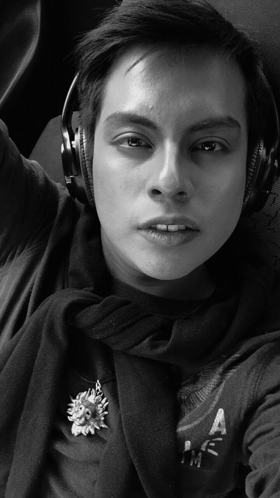

Victor Manuel Concha Lobato
Mi nombre es Víctor Manuel Concha Lobato. Soy originario de la ciudad de los ángeles, Puebla. Actualmente me encuentro estudiando la licenciatura de Diseño Gráfico en la Benemérita Universidad Autónoma de Puebla. Me describo como una persona carismática que gusta de hacer sentir bien a los demás y provocarles una risa si lo necesitan. Soy una persona responsable y leal. Para mí lo más importante es la familia. Dentro de mis hobbies encontramos actividades como la pintura y la animación. Mis metas a corto plazo son temrinar la carrera y poner en práctica lo aprendido en un ambiente laboral exitoso donde pueda demostrar mis habilidades y conocimientos de la comunicación gráfica
